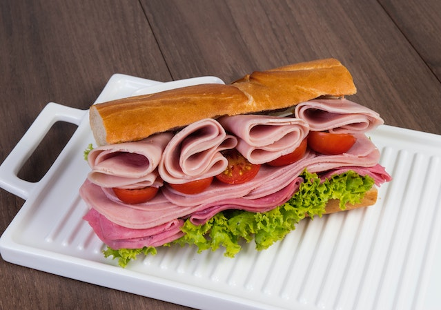

Sanduíche de Presunto

Descrição
Preparação básica de um bom e velho sanduíche de presunto
Ingredientes
Pão (qualquer tipo)
Presunto
Instruções
Pegue um pão
Abra o pão (é recomendado usar uma faca)
Coloque o presunto dentro
Tá pronto, só comer!